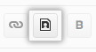

GitHub Wikis can display PNG, JPEG, or GIF images.
 In the upper-right corner of any page, click your profile photo.
In the upper-right corner of any page, click your profile photo.
 On your profile page, click the Repositories tab, then click the name of your repository.
On your profile page, click the Repositories tab, then click the name of your repository.
 In your repository's right sidebar, click Wiki.
In your repository's right sidebar, click Wiki.
- Using the wiki sidebar, navigate to the page you want to change, and then click Edit.
- On the wiki toolbar, click Image
- In the "Insert Image" dialog box, type the image URL and the alt text (which is used by search engines and screen readers).
- Click OK.
Linking to images in a repository
You can link to an image in a repository on GitHub by copying the URL in your browser and using that as the path to the image. For example, embedding an image in your wiki using Markdown might look like this: